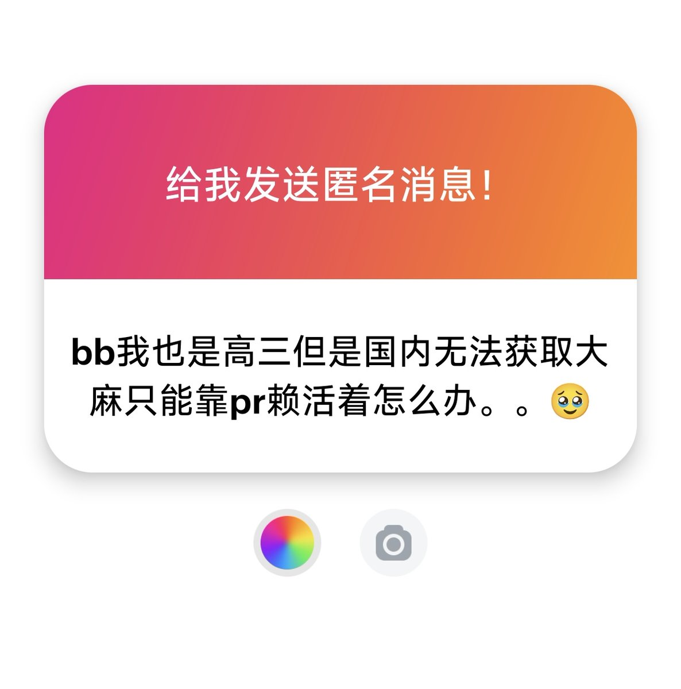

@jiuyouforwhite 宝宝，哲学类型的书还是别推荐了，哲学这东西也越读越明白，越读越清晰，当你自己足够清醒了，清晰的知道自己改变不了，也做不到什么，而这种心理落差感，会让他们更加依赖药物来麻痹自己，越空虚越会想了解哲学作品，越了解哲学作品，越清楚自己的武力，反而更空虚，就这样开始循环……


大麻的欣快感是不如pr的，如果你真的需要pr的话可以间隔很久嗑一次 如五天嗑一次，但代价是间隔那些天会很空虚无趣
千万别依赖pr天天嗑成瘾耐药就是走向毁灭
bb，希望你戒掉它，真真正正回归现实生活，多读点哲学类的书，多出去走走看看世界，与自己内心和解之后就不要依赖药物苟活着
祝你天天开心 https://t.co/ykpVU3MkGR
千万别依赖pr天天嗑成瘾耐药就是走向毁灭
bb，希望你戒掉它，真真正正回归现实生活，多读点哲学类的书，多出去走走看看世界，与自己内心和解之后就不要依赖药物苟活着
祝你天天开心 https://t.co/ykpVU3MkGR